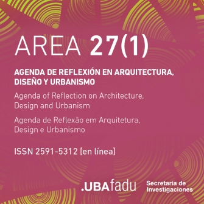
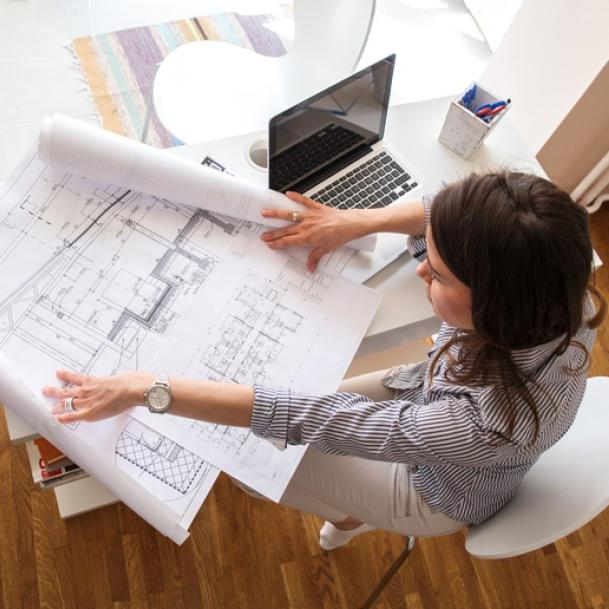
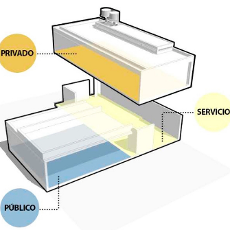
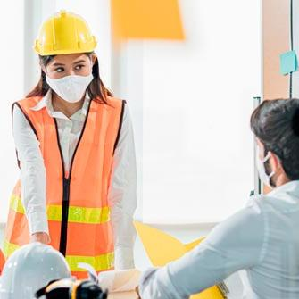

Noticias
Convocatoria Abierta AREA (Agenda de Reflexión en Arquitectura, Diseño y Urbanismo
Agenda de Reflexión en Arquitectura, Diseño y Urbanismo
Compartimos con ustedes e invitamos a difundir, la convocatoria al Dossier: “Hacia la Sustentabilidad del Hábitat Edificado. El rol del diseño en el proceso de transición”, orientado a explorar las múltiples relaciones que se establecen entre los impactos ambientales, sociales y económicos en la producción, gestión y uso del hábitat en las complejas relaciones entre edificación, ambiente y sociedad.
Leer artículo completo
¿Qué debo considerar si quiero estudiar Arquitectura?
¿Sos alguien interesado en comenzar la carrerra de Arquitectura? En este artículo encontraras las respuestas de la mano de un estudiante avanzado en la carrera y que pronto será un egresado de esta demandante, pero muy bella carrera.
Esquemas funcionales: estrategias de organización programática en casas de Argentina
Si bien en numerosos proyectos se busca evitar de manera consciente la adopción de un esquema funcional definitivo -tendiendo intencionalmente hacia la indefinición de los espacios-, en muchos otros, la división clara de los usos y la síntesis programática se presentan como herramientas clave para ordenar, jerarquizar y optimizar el funcionamiento de los espacios.
En el artículo completo se presenta una selección de casas ubicadas en Argentina que utilizan esquemas gráficos para sintetizar sus estrategias funcionales y organizar sus espacios de manera conceptual.
Desniveles en casas argentinas: Separar espacios mediante diferencias de altura

La incorporación de desfasajes y desniveles en los interiores también puede adquirir un carácter funcional, permitiendo segmentar los espacios de manera virtual, cortando el plano horizontal a través de medios niveles más altos o semienterrados –así, por ejemplo, un espacio que se ha rehundido o elevado 50 cm respecto a su contiguo, aparece como un sector diferenciado sin necesidad de incorporar muros u otros cerramientos.
La nueva Arquitecta en tiempos de COVID-19
La pandemia de COVID-19 ha impulsado el cambio en casi todos los aspectos de nuestras vidas. Pero ¿qué significa eso para la arquitectura?